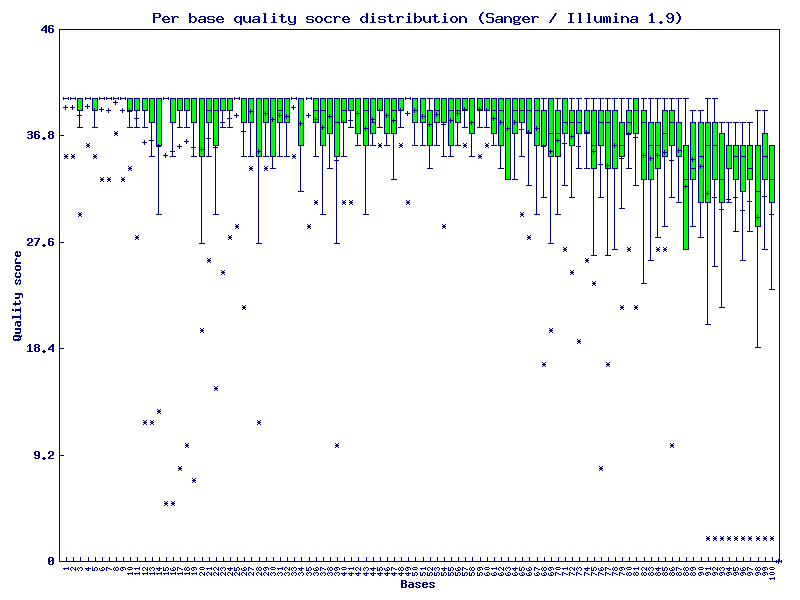
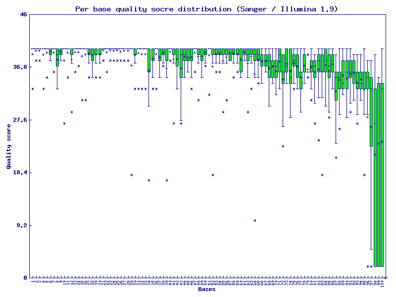
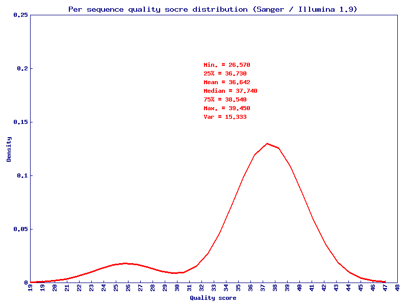
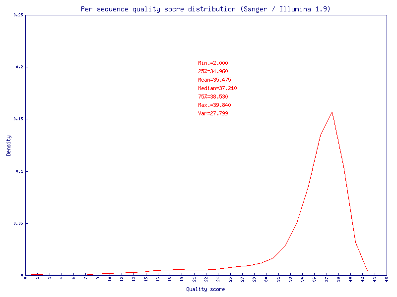
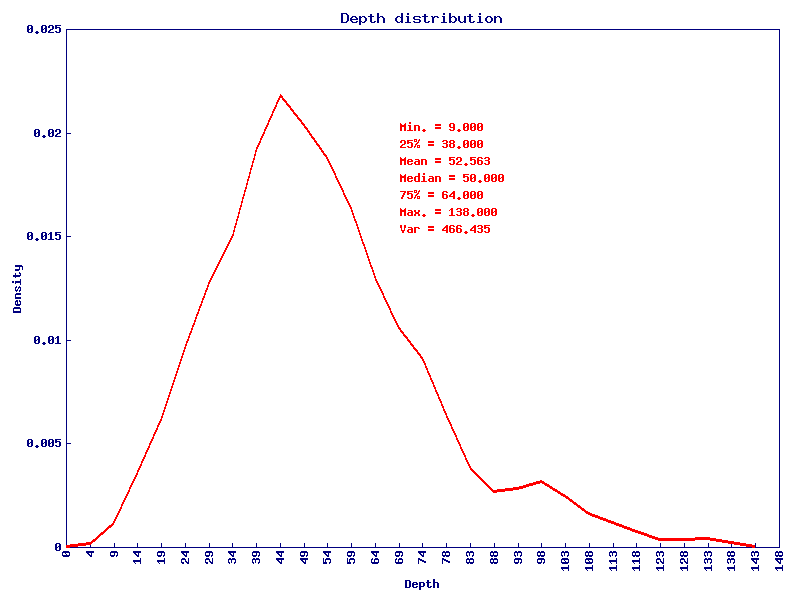
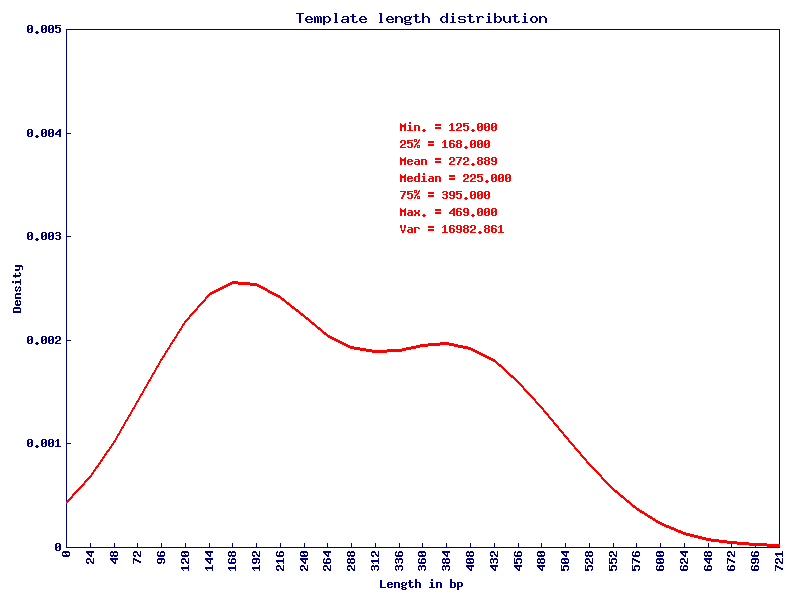
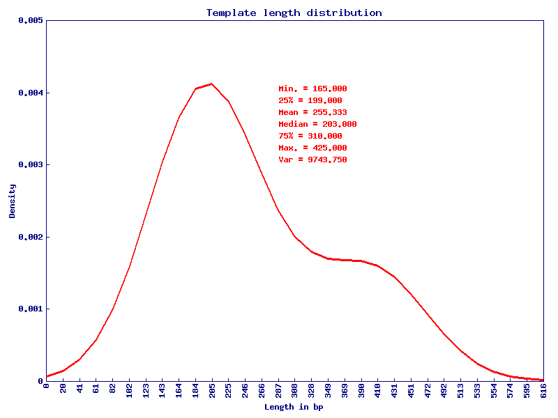

Command
Your command for generating this report, keep it in order to reproduce the result.
perl mitoSeek.pl -i Examples/mt_1.bam -j Examples/brca_normal.bam -cn -sb 1 -hp 1 -d 10
QC
Quality control (QC) is applied to the mapped reads on mitochondria. If -L [bed] is provided, the QC report following is constrained to your provided region. The QC report contains the following 4 parts.
Per base quality
The y-axis on the graph shows the quality scores and the x-axis on the graph shows the positions in the fastq file. For each position a BoxWhisker type plot is drawn. The elements of the plot are as follows:
- The central blue line is the median value
- The red box represents the inter-quartile range (25-75%)
- The upper and lower whiskers represent the 10% and 90% points
- The blue '+' mark represents the mean quality
- The blue '*' mark outside the upper and lower whiskers represents the outlier points
- Tumor
- Normal
- Tumor
- Normal
 Tumor
Tumor- Normal
- Tumor
- Normal
Mapping quality
The y-axis on the graph shows the density and the x-axis on the graph shows the mapping quality scores. The mapping quality score is stored in the 5th column of a SAM/BAM file. It equals to -10log10Pr{mapping position is wrong}, rounded to the nearest integer. A summary of the mapping score is also included in the middle of the plot.
Depth distribution
The y-axis on the graph shows the density and the x-axis on the graph shows the depth. A summary of the depth is also included in the middle of the plot.
Template length distribution
The y-axis on the graph shows the density and the x-axis on the graph shows the template length. The template length is stored in the 9th column of a SAM/BAM file. It is set as 0 for single-segment template or when the information is unavailable. A summary of the template depth is also included in the middle of the plot.
Heteroplasmy
Heteroplasmy detection threshold is defined on two scales: read count (-ha) and read percentage (-hp). Read count denotes the number of reads we must observe to support heteroplasmy while read percentage denotes the percentage of reads we must observe to support heteroplasmy. Both scales can be used together or individually. The minimum recommended depth requirement (-d) for detecting heteroplasmy is 50. Lower depth will severely damage the confidence of heteroplasmy calling.
Tumor
| #chr | pos | ref | forward_A | forward_T | forward_C | forward_G | reverse_A | reverse_T | reverse_C | reverse_G | heteroplasmy | 95%ci_lower | 95%ci_upper | major_allele | minor_allele | major_allele_count | minor_allele_count | gene | genedetail | exonic_function | aminochange | strand_bias |
|---|---|---|---|---|---|---|---|---|---|---|---|---|---|---|---|---|---|---|---|---|---|---|
| MT | 217 | T | 0 | 52 | 1 | 0 | 0 | 13 | 0 | 0 | 0.015 | 0.000 | 0.044 | T | C | 65 | 1 | 1.245 |
Normal
| #chr | pos | ref | forward_A | forward_T | forward_C | forward_G | reverse_A | reverse_T | reverse_C | reverse_G | heteroplasmy | 95%ci_lower | 95%ci_upper | major_allele | minor_allele | major_allele_count | minor_allele_count | gene | genedetail | exonic_function | aminochange | strand_bias |
|---|---|---|---|---|---|---|---|---|---|---|---|---|---|---|---|---|---|---|---|---|---|---|
| MT | 45 | A | 12 | 0 | 1 | 0 | 0 | 0 | 0 | 0 | 0.077 | 0.000 | 0.222 | A | C | 12 | 1 | 0 | ||||
| MT | 48 | C | 0 | 1 | 12 | 0 | 0 | 0 | 0 | 0 | 0.077 | 0.000 | 0.222 | C | T | 12 | 1 | 0 | ||||
| MT | 239 | T | 1 | 17 | 0 | 0 | 0 | 2 | 0 | 0 | 0.050 | 0.000 | 0.146 | T | A | 19 | 1 | 1.111 |
Structural Changes
MitoSeek reports mitochondria structural changes when pair-end sequencing data is given as input. During alignment, a portion of the read-pairs will be discordantly mapped, meaning one read of the pair is aligned to mitochondria and the mate pair is aligned elsewhere. Such reads are like to be the results of alignment errors from homologous regions between mitochondria genome and other genomes. However, they could also indicate mitochondria integration into other genomes which has been reported to be possible by multiple studies. Only those structural changes with >=n (-str) spanning reads support will be outputed.
Tumor
| #MitoChr | MitoPos | VarChr | VarPos | SupportedReads | MeanMappingQuality | Mito.gene | Mito.genedetail |
|---|---|---|---|---|---|---|---|
| MT | 10017 | MT | 64132194 | 2 | 37 | TRNG | MTTG:tRNA:9992-10059:(+) |
| MT | 10041 | MT | 75263507 | 2 | 37 | TRNG | MTTG:tRNA:9992-10059:(+) |
| MT | 10053 | MT | 41191906 | 2 | 37 | TRNG | MTTG:tRNA:9992-10059:(+) |
| MT | 10065 | MT | 72611438 | 2 | 37 | ND3 | MTND3:mRNA:10060-10405:(+) |
| MT | 10073 | MT | 94630311 | 2 | 37 | ND3 | MTND3:mRNA:10060-10405:(+) |
| MT | 10196 | MT | 97488352 | 2 | 37 | ND3 | MTND3:mRNA:10060-10405:(+) |
| MT | 10201 | MT | 74740932 | 3 | 37 | ND3 | MTND3:mRNA:10060-10405:(+) |
| MT | 10201 | MT | 117876367 | 2 | 37 | ND3 | MTND3:mRNA:10060-10405:(+) |
| MT | 10292 | MT | 92591656 | 2 | 37 | ND3 | MTND3:mRNA:10060-10405:(+) |
| MT | 10383 | MT | 11175386 | 2 | 37 | ND3 | MTND3:mRNA:10060-10405:(+) |
| MT | 10505 | MT | 132956216 | 3 | 37 | ND4L | MTND4L:mRNA:10471-10767:(+) |
| MT | 10539 | MT | 60468320 | 2 | 37 | ND4L | MTND4L:mRNA:10471-10767:(+) |
| MT | 10544 | MT | 165578525 | 2 | 37 | ND4L | MTND4L:mRNA:10471-10767:(+) |
| MT | 10584 | MT | 107367469 | 3 | 37 | ND4L | MTND4L:mRNA:10471-10767:(+) |
| MT | 10677 | MT | 28339538 | 2 | 37 | ND4L | MTND4L:mRNA:10471-10767:(+) |
| MT | 10692 | MT | 13514768 | 2 | 37 | ND4L | MTND4L:mRNA:10471-10767:(+) |
| MT | 10734 | MT | 34540093 | 2 | 37 | ND4L | MTND4L:mRNA:10471-10767:(+) |
| MT | 10776 | MT | 149922154 | 3 | 37 | ND4 | MTND4:mRNA:10761-12138:(+) |
| MT | 10783 | MT | 78709408 | 2 | 37 | ND4 | MTND4:mRNA:10761-12138:(+) |
| MT | 10797 | MT | 194168722 | 3 | 37 | ND4 | MTND4:mRNA:10761-12138:(+) |
| MT | 10815 | MT | 143602141 | 2 | 37 | ND4 | MTND4:mRNA:10761-12138:(+) |
| MT | 10874 | MT | 38799417 | 2 | 37 | ND4 | MTND4:mRNA:10761-12138:(+) |
| MT | 10919 | MT | 23701465 | 2 | 37 | ND4 | MTND4:mRNA:10761-12138:(+) |
| MT | 11032 | MT | 102731651 | 2 | 37 | ND4 | MTND4:mRNA:10761-12138:(+) |
| MT | 11042 | MT | 12951775 | 3 | 37 | ND4 | MTND4:mRNA:10761-12138:(+) |
| MT | 11042 | MT | 175602625 | 3 | 37 | ND4 | MTND4:mRNA:10761-12138:(+) |
| MT | 11098 | MT | 101984933 | 2 | 37 | ND4 | MTND4:mRNA:10761-12138:(+) |
| MT | 11120 | MT | 16756530 | 2 | 30 | ND4 | MTND4:mRNA:10761-12138:(+) |
| MT | 11124 | MT | 98166532 | 2 | 37 | ND4 | MTND4:mRNA:10761-12138:(+) |
| MT | 11131 | MT | 35756708 | 2 | 37 | ND4 | MTND4:mRNA:10761-12138:(+) |
| MT | 11151 | MT | 568796 | 2 | 37 | ND4 | MTND4:mRNA:10761-12138:(+) |
| MT | 11169 | MT | 19505632 | 2 | 37 | ND4 | MTND4:mRNA:10761-12138:(+) |
| MT | 11174 | MT | 125181356 | 2 | 37 | ND4 | MTND4:mRNA:10761-12138:(+) |
| MT | 11220 | MT | 146041021 | 2 | 37 | ND4 | MTND4:mRNA:10761-12138:(+) |
| MT | 11258 | MT | 38933422 | 3 | 37 | ND4 | MTND4:mRNA:10761-12138:(+) |
| MT | 11268 | MT | 19451689 | 2 | 37 | ND4 | MTND4:mRNA:10761-12138:(+) |
| MT | 11308 | MT | 16327360 | 2 | 37 | ND4 | MTND4:mRNA:10761-12138:(+) |
| MT | 11347 | MT | 54070305 | 2 | 37 | ND4 | MTND4:mRNA:10761-12138:(+) |
| MT | 11359 | MT | 12597033 | 2 | 37 | ND4 | MTND4:mRNA:10761-12138:(+) |
| MT | 11389 | MT | 178379455 | 2 | 37 | ND4 | MTND4:mRNA:10761-12138:(+) |
| MT | 11393 | MT | 100135994 | 2 | 37 | ND4 | MTND4:mRNA:10761-12138:(+) |
| MT | 11396 | MT | 127210886 | 2 | 37 | ND4 | MTND4:mRNA:10761-12138:(+) |
| MT | 11421 | MT | 18324096 | 2 | 37 | ND4 | MTND4:mRNA:10761-12138:(+) |
| MT | 11474 | MT | 43973943 | 2 | 37 | ND4 | MTND4:mRNA:10761-12138:(+) |
| MT | 11571 | MT | 40524022 | 2 | 37 | ND4 | MTND4:mRNA:10761-12138:(+) |
| MT | 11591 | MT | 53211247 | 2 | 37 | ND4 | MTND4:mRNA:10761-12138:(+) |
| MT | 11644 | MT | 84834362 | 2 | 23 | ND4 | MTND4:mRNA:10761-12138:(+) |
| MT | 11695 | MT | 44328554 | 2 | 37 | ND4 | MTND4:mRNA:10761-12138:(+) |
| MT | 11763 | MT | 142249817 | 3 | 37 | ND4 | MTND4:mRNA:10761-12138:(+) |
| MT | 11921 | MT | 14804894 | 2 | 37 | ND4 | MTND4:mRNA:10761-12138:(+) |
| MT | 11932 | MT | 120783345 | 2 | 37 | ND4 | MTND4:mRNA:10761-12138:(+) |
| MT | 11978 | MT | 193107239 | 2 | 37 | ND4 | MTND4:mRNA:10761-12138:(+) |
| MT | 11986 | MT | 152527645 | 2 | 37 | ND4 | MTND4:mRNA:10761-12138:(+) |
| MT | 12036 | MT | 114951057 | 2 | 37 | ND4 | MTND4:mRNA:10761-12138:(+) |
| MT | 121 | MT | 14788698 | 2 | 37 | ||
| MT | 12117 | MT | 118380974 | 2 | 37 | ND4 | MTND4:mRNA:10761-12138:(+) |
| MT | 12194 | MT | 89534535 | 2 | 37 | TRNH | MTTH:tRNA:12139-12207:(+) |
| MT | 12196 | MT | 81719331 | 2 | 37 | TRNH | MTTH:tRNA:12139-12207:(+) |
| MT | 12213 | MT | 104669566 | 3 | 37 | TRNS2 | MTTS2:tRNA:12208-12266:(+) |
| MT | 12216 | MT | 43348608 | 3 | 37 | TRNS2 | MTTS2:tRNA:12208-12266:(+) |
| MT | 12251 | MT | 128594404 | 2 | 37 | TRNS2 | MTTS2:tRNA:12208-12266:(+) |
| MT | 12272 | MT | 119559777 | 2 | 37 | TRNL2 | MTTL2:tRNA:12267-12337:(+) |
| MT | 12298 | MT | 101795333 | 2 | 37 | TRNL2 | MTTL2:tRNA:12267-12337:(+) |
| MT | 12321 | MT | 24211284 | 2 | 37 | TRNL2 | MTTL2:tRNA:12267-12337:(+) |
| MT | 12433 | MT | 7829237 | 2 | 37 | ND5 | MTND5:mRNA:12338-14149:(+) |
| MT | 12434 | MT | 71411531 | 3 | 37 | ND5 | MTND5:mRNA:12338-14149:(+) |
| MT | 12461 | MT | 4903227 | 2 | 37 | ND5 | MTND5:mRNA:12338-14149:(+) |
| MT | 12472 | MT | 61433341 | 2 | 37 | ND5 | MTND5:mRNA:12338-14149:(+) |
| MT | 12482 | MT | 107910150 | 2 | 37 | ND5 | MTND5:mRNA:12338-14149:(+) |
| MT | 12491 | MT | 57409214 | 4 | 37 | ND5 | MTND5:mRNA:12338-14149:(+) |
| MT | 12501 | MT | 77799561 | 2 | 37 | ND5 | MTND5:mRNA:12338-14149:(+) |
| MT | 12511 | MT | 118676718 | 2 | 37 | ND5 | MTND5:mRNA:12338-14149:(+) |
| MT | 12549 | MT | 39587007 | 2 | 37 | ND5 | MTND5:mRNA:12338-14149:(+) |
| MT | 12646 | MT | 87675571 | 3 | 37 | ND5 | MTND5:mRNA:12338-14149:(+) |
| MT | 12679 | MT | 22636773 | 2 | 37 | ND5 | MTND5:mRNA:12338-14149:(+) |
| MT | 12688 | MT | 49311162 | 2 | 37 | ND5 | MTND5:mRNA:12338-14149:(+) |
| MT | 12704 | MT | 66707831 | 2 | 37 | ND5 | MTND5:mRNA:12338-14149:(+) |
| MT | 12734 | MT | 132692386 | 2 | 37 | ND5 | MTND5:mRNA:12338-14149:(+) |
| MT | 12758 | MT | 39832928 | 2 | 37 | ND5 | MTND5:mRNA:12338-14149:(+) |
| MT | 12766 | MT | 42697128 | 2 | 37 | ND5 | MTND5:mRNA:12338-14149:(+) |
| MT | 12781 | MT | 113802512 | 2 | 37 | ND5 | MTND5:mRNA:12338-14149:(+) |
| MT | 12782 | MT | 105151297 | 2 | 31 | ND5 | MTND5:mRNA:12338-14149:(+) |
| MT | 12852 | MT | 140487247 | 2 | 37 | ND5 | MTND5:mRNA:12338-14149:(+) |
| MT | 129 | MT | 83454197 | 2 | 37 | ||
| MT | 13016 | MT | 14095582 | 2 | 37 | ND5 | MTND5:mRNA:12338-14149:(+) |
| MT | 13021 | MT | 55604570 | 2 | 37 | ND5 | MTND5:mRNA:12338-14149:(+) |
| MT | 13040 | MT | 193093917 | 3 | 37 | ND5 | MTND5:mRNA:12338-14149:(+) |
| MT | 13052 | MT | 28652505 | 3 | 37 | ND5 | MTND5:mRNA:12338-14149:(+) |
| MT | 1312 | MT | 240308058 | 2 | 37 | RNR1 | MTRNR1:rRNA:650-1603:(+) |
| MT | 13122 | MT | 119780375 | 3 | 37 | ND5 | MTND5:mRNA:12338-14149:(+) |
| MT | 1319 | MT | 53453234 | 2 | 37 | RNR1 | MTRNR1:rRNA:650-1603:(+) |
| MT | 13220 | MT | 81495385 | 2 | 37 | ND5 | MTND5:mRNA:12338-14149:(+) |
| MT | 13267 | MT | 86591170 | 2 | 37 | ND5 | MTND5:mRNA:12338-14149:(+) |
| MT | 13335 | MT | 99979932 | 2 | 37 | ND5 | MTND5:mRNA:12338-14149:(+) |
| MT | 13411 | MT | 107973301 | 2 | 37 | ND5 | MTND5:mRNA:12338-14149:(+) |
| MT | 13439 | MT | 142272000 | 2 | 37 | ND5 | MTND5:mRNA:12338-14149:(+) |
| MT | 13516 | MT | 40570915 | 2 | 37 | ND5 | MTND5:mRNA:12338-14149:(+) |
| MT | 13519 | MT | 183603766 | 3 | 37 | ND5 | MTND5:mRNA:12338-14149:(+) |
| MT | 13547 | MT | 88747305 | 2 | 37 | ND5 | MTND5:mRNA:12338-14149:(+) |
| MT | 13693 | MT | 19469351 | 3 | 37 | ND5 | MTND5:mRNA:12338-14149:(+) |
| MT | 13733 | MT | 84732689 | 4 | 37 | ND5 | MTND5:mRNA:12338-14149:(+) |
| MT | 13760 | MT | 178740573 | 3 | 37 | ND5 | MTND5:mRNA:12338-14149:(+) |
| MT | 13861 | MT | 170663539 | 2 | 37 | ND5 | MTND5:mRNA:12338-14149:(+) |
| MT | 13866 | MT | 159015171 | 2 | 37 | ND5 | MTND5:mRNA:12338-14149:(+) |
| MT | 13885 | MT | 23702001 | 2 | 37 | ND5 | MTND5:mRNA:12338-14149:(+) |
| MT | 13908 | MT | 55564576 | 2 | 37 | ND5 | MTND5:mRNA:12338-14149:(+) |
| MT | 13964 | MT | 35369741 | 2 | 37 | ND5 | MTND5:mRNA:12338-14149:(+) |
| MT | 13969 | MT | 18283539 | 2 | 25 | ND5 | MTND5:mRNA:12338-14149:(+) |
| MT | 13982 | MT | 40366702 | 2 | 37 | ND5 | MTND5:mRNA:12338-14149:(+) |
| MT | 14014 | MT | 7894229 | 2 | 37 | ND5 | MTND5:mRNA:12338-14149:(+) |
| MT | 14026 | MT | 162044521 | 2 | 37 | ND5 | MTND5:mRNA:12338-14149:(+) |
| MT | 14028 | MT | 42985567 | 3 | 37 | ND5 | MTND5:mRNA:12338-14149:(+) |
| MT | 1404 | MT | 171981740 | 3 | 23 | RNR1 | MTRNR1:rRNA:650-1603:(+) |
| MT | 14056 | MT | 79974884 | 2 | 37 | ND5 | MTND5:mRNA:12338-14149:(+) |
| MT | 14097 | MT | 51887630 | 2 | 37 | ND5 | MTND5:mRNA:12338-14149:(+) |
| MT | 14097 | MT | 44282721 | 2 | 37 | ND5 | MTND5:mRNA:12338-14149:(+) |
| MT | 14102 | MT | 87072617 | 2 | 37 | ND5 | MTND5:mRNA:12338-14149:(+) |
| MT | 14123 | MT | 24671999 | 2 | 37 | ND5 | MTND5:mRNA:12338-14149:(+) |
| MT | 14132 | MT | 20652754 | 3 | 37 | ND5 | MTND5:mRNA:12338-14149:(+) |
| MT | 14134 | MT | 133663514 | 2 | 37 | ND5 | MTND5:mRNA:12338-14149:(+) |
| MT | 14150 | MT | 65985088 | 2 | 37 | ND6 | MTND6:mRNA:14150-14674:(-) |
| MT | 14155 | MT | 38406900 | 2 | 37 | ND6 | MTND6:mRNA:14150-14674:(-) |
| MT | 14157 | MT | 52010758 | 2 | 37 | ND6 | MTND6:mRNA:14150-14674:(-) |
| MT | 14182 | MT | 33330840 | 2 | 37 | ND6 | MTND6:mRNA:14150-14674:(-) |
| MT | 14192 | MT | 179044440 | 2 | 37 | ND6 | MTND6:mRNA:14150-14674:(-) |
| MT | 14219 | MT | 66362090 | 2 | 37 | ND6 | MTND6:mRNA:14150-14674:(-) |
| MT | 14245 | MT | 162309865 | 2 | 37 | ND6 | MTND6:mRNA:14150-14674:(-) |
| MT | 14256 | MT | 34418910 | 2 | 37 | ND6 | MTND6:mRNA:14150-14674:(-) |
| MT | 14258 | MT | 5260069 | 2 | 37 | ND6 | MTND6:mRNA:14150-14674:(-) |
| MT | 14258 | MT | 190283382 | 5 | 37 | ND6 | MTND6:mRNA:14150-14674:(-) |
| MT | 14264 | MT | 14560055 | 2 | 37 | ND6 | MTND6:mRNA:14150-14674:(-) |
| MT | 14291 | MT | 6438988 | 2 | 37 | ND6 | MTND6:mRNA:14150-14674:(-) |
| MT | 14307 | MT | 37264955 | 4 | 37 | ND6 | MTND6:mRNA:14150-14674:(-) |
| MT | 14309 | MT | 177491429 | 2 | 37 | ND6 | MTND6:mRNA:14150-14674:(-) |
| MT | 14333 | MT | 137571749 | 2 | 37 | ND6 | MTND6:mRNA:14150-14674:(-) |
| MT | 14342 | MT | 135098916 | 2 | 37 | ND6 | MTND6:mRNA:14150-14674:(-) |
| MT | 14379 | MT | 110399256 | 2 | 37 | ND6 | MTND6:mRNA:14150-14674:(-) |
| MT | 14389 | MT | 60067446 | 2 | 22.5 | ND6 | MTND6:mRNA:14150-14674:(-) |
| MT | 14393 | MT | 85280166 | 3 | 37 | ND6 | MTND6:mRNA:14150-14674:(-) |
| MT | 14393 | MT | 125862721 | 2 | 37 | ND6 | MTND6:mRNA:14150-14674:(-) |
| MT | 14399 | MT | 133760726 | 2 | 37 | ND6 | MTND6:mRNA:14150-14674:(-) |
| MT | 14409 | MT | 43591704 | 2 | 37 | ND6 | MTND6:mRNA:14150-14674:(-) |
| MT | 14410 | MT | 426912 | 2 | 37 | ND6 | MTND6:mRNA:14150-14674:(-) |
| MT | 14417 | MT | 161143431 | 2 | 37 | ND6 | MTND6:mRNA:14150-14674:(-) |
| MT | 14453 | MT | 156922708 | 2 | 37 | ND6 | MTND6:mRNA:14150-14674:(-) |
| MT | 14514 | MT | 22148663 | 2 | 37 | ND6 | MTND6:mRNA:14150-14674:(-) |
| MT | 14647 | MT | 183486742 | 2 | 37 | ND6 | MTND6:mRNA:14150-14674:(-) |
| MT | 14652 | MT | 1017052 | 3 | 37 | ND6 | MTND6:mRNA:14150-14674:(-) |
| MT | 14669 | MT | 151236100 | 3 | 37 | ND6 | MTND6:mRNA:14150-14674:(-) |
| MT | 14673 | MT | 81572045 | 2 | 37 | ND6 | MTND6:mRNA:14150-14674:(-) |
| MT | 14676 | MT | 239141396 | 3 | 37 | TRNE | MTTE:tRNA:14675-14743:(-) |
| MT | 14702 | MT | 159100019 | 2 | 37 | TRNE | MTTE:tRNA:14675-14743:(-) |
| MT | 14718 | MT | 152112018 | 2 | 37 | TRNE | MTTE:tRNA:14675-14743:(-) |
| MT | 14739 | MT | 103294360 | 2 | 37 | TRNE | MTTE:tRNA:14675-14743:(-) |
| MT | 14743 | MT | 81858824 | 2 | 37 | TRNE | MTTE:tRNA:14675-14743:(-) |
| MT | 14768 | MT | 43602642 | 2 | 37 | CYTB | MTCYB:mRNA:14748-15882:(+) |
| MT | 14798 | MT | 109754569 | 3 | 37 | CYTB | MTCYB:mRNA:14748-15882:(+) |
| MT | 14839 | MT | 80965689 | 2 | 37 | CYTB | MTCYB:mRNA:14748-15882:(+) |
| MT | 14871 | MT | 65334387 | 3 | 32.3333333333333 | CYTB | MTCYB:mRNA:14748-15882:(+) |
| MT | 14895 | MT | 167403234 | 2 | 37 | CYTB | MTCYB:mRNA:14748-15882:(+) |
| MT | 14895 | MT | 72361838 | 2 | 37 | CYTB | MTCYB:mRNA:14748-15882:(+) |
| MT | 14911 | MT | 69129697 | 2 | 37 | CYTB | MTCYB:mRNA:14748-15882:(+) |
| MT | 14917 | MT | 82690709 | 2 | 37 | CYTB | MTCYB:mRNA:14748-15882:(+) |
| MT | 14922 | MT | 33533193 | 2 | 37 | CYTB | MTCYB:mRNA:14748-15882:(+) |
| MT | 14936 | MT | 39838007 | 2 | 37 | CYTB | MTCYB:mRNA:14748-15882:(+) |
| MT | 14952 | MT | 10783779 | 3 | 37 | CYTB | MTCYB:mRNA:14748-15882:(+) |
| MT | 14967 | MT | 29639264 | 2 | 37 | CYTB | MTCYB:mRNA:14748-15882:(+) |
| MT | 14973 | MT | 152129345 | 3 | 37 | CYTB | MTCYB:mRNA:14748-15882:(+) |
| MT | 14977 | MT | 10059615 | 3 | 37 | CYTB | MTCYB:mRNA:14748-15882:(+) |
| MT | 1521 | MT | 20311516 | 2 | 23 | RNR1 | MTRNR1:rRNA:650-1603:(+) |
| MT | 15288 | MT | 56423976 | 2 | 37 | CYTB | MTCYB:mRNA:14748-15882:(+) |
| MT | 15326 | MT | 131442391 | 2 | 37 | CYTB | MTCYB:mRNA:14748-15882:(+) |
| MT | 15343 | MT | 209944763 | 3 | 37 | CYTB | MTCYB:mRNA:14748-15882:(+) |
| MT | 15351 | MT | 120476172 | 3 | 37 | CYTB | MTCYB:mRNA:14748-15882:(+) |
| MT | 15376 | MT | 38818127 | 2 | 37 | CYTB | MTCYB:mRNA:14748-15882:(+) |
| MT | 15386 | MT | 31050459 | 2 | 37 | CYTB | MTCYB:mRNA:14748-15882:(+) |
| MT | 15407 | MT | 32405675 | 2 | 37 | CYTB | MTCYB:mRNA:14748-15882:(+) |
| MT | 15422 | MT | 82044706 | 2 | 37 | CYTB | MTCYB:mRNA:14748-15882:(+) |
| MT | 15466 | MT | 196032031 | 2 | 37 | CYTB | MTCYB:mRNA:14748-15882:(+) |
| MT | 15490 | MT | 170818236 | 3 | 37 | CYTB | MTCYB:mRNA:14748-15882:(+) |
| MT | 15539 | MT | 80410486 | 2 | 37 | CYTB | MTCYB:mRNA:14748-15882:(+) |
| MT | 15562 | MT | 157731236 | 2 | 37 | CYTB | MTCYB:mRNA:14748-15882:(+) |
| MT | 15564 | MT | 3785302 | 2 | 37 | CYTB | MTCYB:mRNA:14748-15882:(+) |
| MT | 15566 | MT | 98795466 | 2 | 37 | CYTB | MTCYB:mRNA:14748-15882:(+) |
| MT | 15577 | MT | 112331741 | 2 | 37 | CYTB | MTCYB:mRNA:14748-15882:(+) |
| MT | 15594 | MT | 73007832 | 3 | 37 | CYTB | MTCYB:mRNA:14748-15882:(+) |
| MT | 156 | MT | 13706983 | 2 | 37 | ||
| MT | 15626 | MT | 49093574 | 2 | 37 | CYTB | MTCYB:mRNA:14748-15882:(+) |
| MT | 15635 | MT | 107157488 | 4 | 37 | CYTB | MTCYB:mRNA:14748-15882:(+) |
| MT | 15642 | MT | 42971738 | 2 | 37 | CYTB | MTCYB:mRNA:14748-15882:(+) |
| MT | 15647 | MT | 158019033 | 2 | 37 | CYTB | MTCYB:mRNA:14748-15882:(+) |
| MT | 15685 | MT | 50338704 | 2 | 37 | CYTB | MTCYB:mRNA:14748-15882:(+) |
| MT | 15685 | MT | 49556438 | 2 | 37 | CYTB | MTCYB:mRNA:14748-15882:(+) |
| MT | 15776 | MT | 101525535 | 2 | 37 | CYTB | MTCYB:mRNA:14748-15882:(+) |
| MT | 15834 | MT | 182173073 | 3 | 37 | CYTB | MTCYB:mRNA:14748-15882:(+) |
| MT | 15868 | MT | 98228862 | 2 | 37 | CYTB | MTCYB:mRNA:14748-15882:(+) |
| MT | 15897 | MT | 25827656 | 2 | 37 | TRNT | MTTT:tRNA:15889-15954:(+) |
| MT | 15901 | MT | 46117248 | 2 | 37 | TRNT | MTTT:tRNA:15889-15954:(+) |
| MT | 15932 | MT | 128975728 | 2 | 37 | TRNT | MTTT:tRNA:15889-15954:(+) |
| MT | 15977 | MT | 222806194 | 2 | 37 | TRNP | MTTP:tRNA:15956-16024:(-) |
| MT | 15987 | MT | 31250820 | 2 | 37 | TRNP | MTTP:tRNA:15956-16024:(-) |
| MT | 16018 | MT | 34113630 | 3 | 37 | TRNP | MTTP:tRNA:15956-16024:(-) |
| MT | 1602 | MT | 32072343 | 2 | 37 | RNR1 | MTRNR1:rRNA:650-1603:(+) |
| MT | 16024 | MT | 102280746 | 2 | 37 | TRNP | MTTP:tRNA:15956-16024:(-) |
| MT | 16056 | MT | 158463938 | 2 | 37 | ||
| MT | 16057 | MT | 121392634 | 2 | 37 | ||
| MT | 16063 | MT | 58811085 | 2 | 37 | ||
| MT | 16120 | MT | 43206276 | 3 | 37 | ||
| MT | 1615 | MT | 243167246 | 2 | 31 | TRNV | MTTV:tRNA:1604-1672:(+) |
| MT | 16182 | MT | 135926332 | 3 | 37 | ||
| MT | 16194 | MT | 9010958 | 2 | 37 | ||
| MT | 16227 | MT | 51374335 | 2 | 37 | ||
| MT | 16229 | MT | 67764568 | 2 | 25 | ||
| MT | 16240 | MT | 28380833 | 2 | 37 | ||
| MT | 16250 | MT | 119938190 | 2 | 37 | ||
| MT | 16257 | MT | 59373563 | 2 | 37 | ||
| MT | 16258 | MT | 79954746 | 4 | 37 | ||
| MT | 16348 | MT | 6980615 | 2 | 37 | ||
| MT | 16349 | MT | 24516383 | 2 | 37 | ||
| MT | 16377 | MT | 101091008 | 3 | 37 | ||
| MT | 16401 | MT | 14353252 | 2 | 37 | ||
| MT | 16454 | MT | 23999418 | 3 | 37 | ||
| MT | 1666 | MT | 43488016 | 2 | 37 | TRNV | MTTV:tRNA:1604-1672:(+) |
| MT | 1749 | MT | 160741741 | 2 | 37 | RNR2 | MTRNR2:rRNA:1673-3230:(+) |
| MT | 1756 | MT | 186281362 | 2 | 37 | RNR2 | MTRNR2:rRNA:1673-3230:(+) |
| MT | 1788 | MT | 47408647 | 2 | 37 | RNR2 | MTRNR2:rRNA:1673-3230:(+) |
| MT | 1799 | MT | 5609611 | 3 | 37 | RNR2 | MTRNR2:rRNA:1673-3230:(+) |
| MT | 1814 | MT | 58302339 | 3 | 37 | RNR2 | MTRNR2:rRNA:1673-3230:(+) |
| MT | 1881 | MT | 63525562 | 2 | 37 | RNR2 | MTRNR2:rRNA:1673-3230:(+) |
| MT | 1881 | MT | 175892782 | 4 | 37 | RNR2 | MTRNR2:rRNA:1673-3230:(+) |
| MT | 1882 | MT | 41615538 | 2 | 37 | RNR2 | MTRNR2:rRNA:1673-3230:(+) |
| MT | 1927 | MT | 115391195 | 3 | 27.6666666666667 | RNR2 | MTRNR2:rRNA:1673-3230:(+) |
| MT | 1945 | MT | 59409450 | 2 | 23 | RNR2 | MTRNR2:rRNA:1673-3230:(+) |
| MT | 1946 | MT | 7916541 | 3 | 23 | RNR2 | MTRNR2:rRNA:1673-3230:(+) |
| MT | 1960 | MT | 49323483 | 2 | 37 | RNR2 | MTRNR2:rRNA:1673-3230:(+) |
| MT | 2088 | MT | 155632241 | 2 | 37 | RNR2 | MTRNR2:rRNA:1673-3230:(+) |
| MT | 2148 | MT | 142435648 | 6 | 37 | RNR2 | MTRNR2:rRNA:1673-3230:(+) |
| MT | 2168 | MT | 86434336 | 3 | 37 | RNR2 | MTRNR2:rRNA:1673-3230:(+) |
| MT | 2179 | MT | 91796244 | 3 | 37 | RNR2 | MTRNR2:rRNA:1673-3230:(+) |
| MT | 2233 | MT | 65891075 | 2 | 37 | RNR2 | MTRNR2:rRNA:1673-3230:(+) |
| MT | 2240 | MT | 108698392 | 2 | 37 | RNR2 | MTRNR2:rRNA:1673-3230:(+) |
| MT | 2252 | MT | 171041986 | 2 | 37 | RNR2 | MTRNR2:rRNA:1673-3230:(+) |
| MT | 2280 | MT | 120181659 | 2 | 37 | RNR2 | MTRNR2:rRNA:1673-3230:(+) |
| MT | 2289 | MT | 148880612 | 2 | 37 | RNR2 | MTRNR2:rRNA:1673-3230:(+) |
| MT | 2302 | MT | 43025250 | 3 | 37 | RNR2 | MTRNR2:rRNA:1673-3230:(+) |
| MT | 2303 | MT | 63586948 | 2 | 37 | RNR2 | MTRNR2:rRNA:1673-3230:(+) |
| MT | 2329 | MT | 118342588 | 2 | 37 | RNR2 | MTRNR2:rRNA:1673-3230:(+) |
| MT | 2330 | MT | 41476530 | 3 | 37 | RNR2 | MTRNR2:rRNA:1673-3230:(+) |
| MT | 2334 | MT | 109747703 | 2 | 37 | RNR2 | MTRNR2:rRNA:1673-3230:(+) |
| MT | 2336 | MT | 138265174 | 2 | 37 | RNR2 | MTRNR2:rRNA:1673-3230:(+) |
| MT | 2347 | MT | 129858225 | 2 | 37 | RNR2 | MTRNR2:rRNA:1673-3230:(+) |
| MT | 2389 | MT | 125431554 | 2 | 37 | RNR2 | MTRNR2:rRNA:1673-3230:(+) |
| MT | 2472 | MT | 94213012 | 2 | 37 | RNR2 | MTRNR2:rRNA:1673-3230:(+) |
| MT | 2504 | MT | 90259631 | 2 | 37 | RNR2 | MTRNR2:rRNA:1673-3230:(+) |
| MT | 2516 | MT | 22020479 | 2 | 37 | RNR2 | MTRNR2:rRNA:1673-3230:(+) |
| MT | 2535 | MT | 186031615 | 4 | 37 | RNR2 | MTRNR2:rRNA:1673-3230:(+) |
| MT | 2639 | MT | 113631024 | 2 | 37 | RNR2 | MTRNR2:rRNA:1673-3230:(+) |
| MT | 2700 | MT | 44046897 | 2 | 37 | RNR2 | MTRNR2:rRNA:1673-3230:(+) |
| MT | 2701 | MT | 189248400 | 3 | 37 | RNR2 | MTRNR2:rRNA:1673-3230:(+) |
| MT | 2747 | MT | 152992197 | 2 | 37 | RNR2 | MTRNR2:rRNA:1673-3230:(+) |
| MT | 2860 | MT | 88779528 | 5 | 37 | RNR2 | MTRNR2:rRNA:1673-3230:(+) |
| MT | 2865 | MT | 13627653 | 2 | 37 | RNR2 | MTRNR2:rRNA:1673-3230:(+) |
| MT | 2926 | MT | 79665492 | 2 | 37 | RNR2 | MTRNR2:rRNA:1673-3230:(+) |
| MT | 2959 | MT | 139809017 | 2 | 37 | RNR2 | MTRNR2:rRNA:1673-3230:(+) |
| MT | 3011 | MT | 68848295 | 2 | 37 | RNR2 | MTRNR2:rRNA:1673-3230:(+) |
| MT | 3021 | MT | 170071230 | 2 | 37 | RNR2 | MTRNR2:rRNA:1673-3230:(+) |
| MT | 3031 | MT | 50808391 | 3 | 37 | RNR2 | MTRNR2:rRNA:1673-3230:(+) |
| MT | 3042 | MT | 113553372 | 3 | 37 | RNR2 | MTRNR2:rRNA:1673-3230:(+) |
| MT | 3195 | MT | 152601128 | 3 | 37 | RNR2 | MTRNR2:rRNA:1673-3230:(+) |
| MT | 3203 | MT | 55289946 | 2 | 37 | RNR2 | MTRNR2:rRNA:1673-3230:(+) |
| MT | 3223 | MT | 47084176 | 2 | 37 | RNR2 | MTRNR2:rRNA:1673-3230:(+) |
| MT | 3253 | MT | 152878453 | 2 | 37 | TRNL1 | MTTL1:tRNA:3231-3305:(+) |
| MT | 3293 | MT | 49473486 | 5 | 37 | TRNL1 | MTTL1:tRNA:3231-3305:(+) |
| MT | 3298 | MT | 134889638 | 2 | 37 | TRNL1 | MTTL1:tRNA:3231-3305:(+) |
| MT | 3329 | MT | 33139317 | 2 | 37 | ND1 | MTND1:mRNA:3308-4264:(+) |
| MT | 3340 | MT | 13234705 | 2 | 37 | ND1 | MTND1:mRNA:3308-4264:(+) |
| MT | 3409 | MT | 125274764 | 2 | 37 | ND1 | MTND1:mRNA:3308-4264:(+) |
| MT | 3432 | MT | 170883343 | 2 | 37 | ND1 | MTND1:mRNA:3308-4264:(+) |
| MT | 346 | MT | 1774871 | 2 | 37 | ||
| MT | 3530 | MT | 4551848 | 2 | 37 | ND1 | MTND1:mRNA:3308-4264:(+) |
| MT | 3630 | MT | 258898 | 2 | 37 | ND1 | MTND1:mRNA:3308-4264:(+) |
| MT | 3664 | MT | 184429282 | 3 | 37 | ND1 | MTND1:mRNA:3308-4264:(+) |
| MT | 3725 | MT | 77588017 | 2 | 37 | ND1 | MTND1:mRNA:3308-4264:(+) |
| MT | 3746 | MT | 223285338 | 2 | 37 | ND1 | MTND1:mRNA:3308-4264:(+) |
| MT | 3800 | MT | 37185240 | 2 | 37 | ND1 | MTND1:mRNA:3308-4264:(+) |
| MT | 4015 | MT | 103274072 | 2 | 37 | ND1 | MTND1:mRNA:3308-4264:(+) |
| MT | 4237 | MT | 76000898 | 2 | 37 | ND1 | MTND1:mRNA:3308-4264:(+) |
| MT | 4295 | MT | 104884750 | 2 | 37 | TRNI | MTTI:tRNA:4264-4332:(+) |
| MT | 430 | MT | 46265687 | 2 | 37 | ||
| MT | 4357 | MT | 17204126 | 2 | 23 | TRNQ | MTTQ:tRNA:4330-4401:(-) |
| MT | 4372 | MT | 27078272 | 2 | 23 | TRNQ | MTTQ:tRNA:4330-4401:(-) |
| MT | 4414 | MT | 18198809 | 2 | 23 | TRNM | MTTM:tRNA:4403-4470:(+) |
| MT | 4653 | MT | 153414326 | 2 | 23 | ND2 | MTND2:mRNA:4471-5512:(+) |
| MT | 475 | MT | 102891761 | 2 | 37 | ||
| MT | 4802 | MT | 45209754 | 2 | 23 | ND2 | MTND2:mRNA:4471-5512:(+) |
| MT | 4805 | MT | 32709061 | 2 | 30 | ND2 | MTND2:mRNA:4471-5512:(+) |
| MT | 4935 | MT | 219602675 | 2 | 37 | ND2 | MTND2:mRNA:4471-5512:(+) |
| MT | 4964 | MT | 58235381 | 2 | 37 | ND2 | MTND2:mRNA:4471-5512:(+) |
| MT | 4965 | MT | 204131290 | 2 | 37 | ND2 | MTND2:mRNA:4471-5512:(+) |
| MT | 4965 | MT | 207299066 | 2 | 37 | ND2 | MTND2:mRNA:4471-5512:(+) |
| MT | 4968 | MT | 565240 | 2 | 37 | ND2 | MTND2:mRNA:4471-5512:(+) |
| MT | 5025 | MT | 31762572 | 2 | 23 | ND2 | MTND2:mRNA:4471-5512:(+) |
| MT | 5032 | MT | 9006237 | 2 | 23 | ND2 | MTND2:mRNA:4471-5512:(+) |
| MT | 5048 | MT | 137982429 | 2 | 23 | ND2 | MTND2:mRNA:4471-5512:(+) |
| MT | 5074 | MT | 154507006 | 3 | 23 | ND2 | MTND2:mRNA:4471-5512:(+) |
| MT | 5098 | MT | 22396641 | 2 | 23 | ND2 | MTND2:mRNA:4471-5512:(+) |
| MT | 5101 | MT | 90605799 | 2 | 23 | ND2 | MTND2:mRNA:4471-5512:(+) |
| MT | 5141 | MT | 53655785 | 2 | 23 | ND2 | MTND2:mRNA:4471-5512:(+) |
| MT | 5143 | MT | 50950414 | 2 | 23 | ND2 | MTND2:mRNA:4471-5512:(+) |
| MT | 5255 | MT | 6195272 | 2 | 37 | ND2 | MTND2:mRNA:4471-5512:(+) |
| MT | 5256 | MT | 176561798 | 2 | 37 | ND2 | MTND2:mRNA:4471-5512:(+) |
| MT | 5276 | MT | 166684781 | 4 | 37 | ND2 | MTND2:mRNA:4471-5512:(+) |
| MT | 5278 | MT | 57019037 | 2 | 37 | ND2 | MTND2:mRNA:4471-5512:(+) |
| MT | 5290 | MT | 145235137 | 2 | 37 | ND2 | MTND2:mRNA:4471-5512:(+) |
| MT | 5301 | MT | 78430467 | 2 | 37 | ND2 | MTND2:mRNA:4471-5512:(+) |
| MT | 5301 | MT | 132843524 | 3 | 37 | ND2 | MTND2:mRNA:4471-5512:(+) |
| MT | 5301 | MT | 36051976 | 2 | 37 | ND2 | MTND2:mRNA:4471-5512:(+) |
| MT | 5303 | MT | 42452817 | 2 | 37 | ND2 | MTND2:mRNA:4471-5512:(+) |
| MT | 5336 | MT | 15111392 | 2 | 37 | ND2 | MTND2:mRNA:4471-5512:(+) |
| MT | 5341 | MT | 60994506 | 2 | 37 | ND2 | MTND2:mRNA:4471-5512:(+) |
| MT | 5352 | MT | 219706319 | 2 | 37 | ND2 | MTND2:mRNA:4471-5512:(+) |
| MT | 5370 | MT | 162362610 | 2 | 37 | ND2 | MTND2:mRNA:4471-5512:(+) |
| MT | 5375 | MT | 158605806 | 2 | 37 | ND2 | MTND2:mRNA:4471-5512:(+) |
| MT | 5386 | MT | 79229247 | 2 | 37 | ND2 | MTND2:mRNA:4471-5512:(+) |
| MT | 5392 | MT | 53316816 | 3 | 37 | ND2 | MTND2:mRNA:4471-5512:(+) |
| MT | 5393 | MT | 47384220 | 2 | 37 | ND2 | MTND2:mRNA:4471-5512:(+) |
| MT | 5414 | MT | 87038462 | 3 | 37 | ND2 | MTND2:mRNA:4471-5512:(+) |
| MT | 5418 | MT | 15344073 | 2 | 37 | ND2 | MTND2:mRNA:4471-5512:(+) |
| MT | 5439 | MT | 24873359 | 2 | 37 | ND2 | MTND2:mRNA:4471-5512:(+) |
| MT | 5445 | MT | 48117465 | 4 | 37 | ND2 | MTND2:mRNA:4471-5512:(+) |
| MT | 5450 | MT | 128628085 | 2 | 37 | ND2 | MTND2:mRNA:4471-5512:(+) |
| MT | 5456 | MT | 5776681 | 2 | 37 | ND2 | MTND2:mRNA:4471-5512:(+) |
| MT | 5477 | MT | 568784 | 2 | 23 | ND2 | MTND2:mRNA:4471-5512:(+) |
| MT | 5484 | MT | 160879386 | 2 | 37 | ND2 | MTND2:mRNA:4471-5512:(+) |
| MT | 5515 | MT | 13876255 | 3 | 23 | TRNW | MTTW:tRNA:5513-5580:(+) |
| MT | 5543 | MT | 89154598 | 2 | 23 | TRNW | MTTW:tRNA:5513-5580:(+) |
| MT | 5554 | MT | 158815682 | 3 | 23 | TRNW | MTTW:tRNA:5513-5580:(+) |
| MT | 565 | MT | 20083728 | 2 | 37 | ||
| MT | 5752 | MT | 164442718 | 2 | 37 | ||
| MT | 5794 | MT | 120844214 | 3 | 37 | TRNC | MTTC:tRNA:5762-5827:(-) |
| MT | 5813 | MT | 149202743 | 3 | 37 | TRNC | MTTC:tRNA:5762-5827:(-) |
| MT | 5819 | MT | 17311854 | 2 | 37 | TRNC | MTTC:tRNA:5762-5827:(-) |
| MT | 5823 | MT | 25470308 | 2 | 23 | TRNC | MTTC:tRNA:5762-5827:(-) |
| MT | 590 | MT | 17191066 | 2 | 37 | TRNF | MTTF:tRNA:579-649:(+) |
| MT | 594 | MT | 3796713 | 3 | 37 | TRNF | MTTF:tRNA:579-649:(+) |
| MT | 5974 | MT | 198283329 | 2 | 23 | COX1 | MTCO1:mRNA:5905-7446:(+) |
| MT | 6012 | MT | 123308241 | 2 | 23 | COX1 | MTCO1:mRNA:5905-7446:(+) |
| MT | 6176 | MT | 109724253 | 2 | 37 | COX1 | MTCO1:mRNA:5905-7446:(+) |
| MT | 6340 | MT | 169510243 | 3 | 37 | COX1 | MTCO1:mRNA:5905-7446:(+) |
| MT | 6370 | MT | 156754896 | 2 | 37 | COX1 | MTCO1:mRNA:5905-7446:(+) |
| MT | 6381 | MT | 121475769 | 2 | 37 | COX1 | MTCO1:mRNA:5905-7446:(+) |
| MT | 6416 | MT | 109381535 | 2 | 37 | COX1 | MTCO1:mRNA:5905-7446:(+) |
| MT | 6421 | MT | 150842297 | 2 | 37 | COX1 | MTCO1:mRNA:5905-7446:(+) |
| MT | 6431 | MT | 74186147 | 3 | 37 | COX1 | MTCO1:mRNA:5905-7446:(+) |
| MT | 647 | MT | 99755533 | 2 | 37 | TRNF | MTTF:tRNA:579-649:(+) |
| MT | 6509 | MT | 154020192 | 2 | 37 | COX1 | MTCO1:mRNA:5905-7446:(+) |
| MT | 6522 | MT | 30353496 | 2 | 37 | COX1 | MTCO1:mRNA:5905-7446:(+) |
| MT | 6525 | MT | 195518313 | 3 | 37 | COX1 | MTCO1:mRNA:5905-7446:(+) |
| MT | 654 | MT | 81061514 | 2 | 37 | RNR1 | MTRNR1:rRNA:650-1603:(+) |
| MT | 6554 | MT | 241943096 | 2 | 37 | COX1 | MTCO1:mRNA:5905-7446:(+) |
| MT | 6605 | MT | 79691545 | 3 | 37 | COX1 | MTCO1:mRNA:5905-7446:(+) |
| MT | 6625 | MT | 63962971 | 2 | 37 | COX1 | MTCO1:mRNA:5905-7446:(+) |
| MT | 6681 | MT | 76339062 | 2 | 37 | COX1 | MTCO1:mRNA:5905-7446:(+) |
| MT | 6840 | MT | 109770991 | 2 | 37 | COX1 | MTCO1:mRNA:5905-7446:(+) |
| MT | 6885 | MT | 181493300 | 2 | 37 | COX1 | MTCO1:mRNA:5905-7446:(+) |
| MT | 6898 | MT | 47586099 | 2 | 37 | COX1 | MTCO1:mRNA:5905-7446:(+) |
| MT | 690 | MT | 102019354 | 2 | 37 | RNR1 | MTRNR1:rRNA:650-1603:(+) |
| MT | 6917 | MT | 24179922 | 2 | 37 | COX1 | MTCO1:mRNA:5905-7446:(+) |
| MT | 6938 | MT | 79254470 | 2 | 23 | COX1 | MTCO1:mRNA:5905-7446:(+) |
| MT | 7085 | MT | 566657 | 2 | 23 | COX1 | MTCO1:mRNA:5905-7446:(+) |
| MT | 7152 | MT | 89355918 | 2 | 23 | COX1 | MTCO1:mRNA:5905-7446:(+) |
| MT | 7180 | MT | 28360230 | 2 | 37 | COX1 | MTCO1:mRNA:5905-7446:(+) |
| MT | 7183 | MT | 63614944 | 2 | 37 | COX1 | MTCO1:mRNA:5905-7446:(+) |
| MT | 7227 | MT | 126049473 | 2 | 37 | COX1 | MTCO1:mRNA:5905-7446:(+) |
| MT | 7240 | MT | 142596683 | 2 | 37 | COX1 | MTCO1:mRNA:5905-7446:(+) |
| MT | 7265 | MT | 119456301 | 2 | 23 | COX1 | MTCO1:mRNA:5905-7446:(+) |
| MT | 7288 | MT | 31973508 | 2 | 23 | COX1 | MTCO1:mRNA:5905-7446:(+) |
| MT | 744 | MT | 214735578 | 2 | 37 | RNR1 | MTRNR1:rRNA:650-1603:(+) |
| MT | 7461 | MT | 45234359 | 2 | 23 | TRNS1 | MTTS1:tRNA:7446-7517:(-) |
| MT | 7512 | MT | 28277161 | 2 | 23 | TRNS1 | MTTS1:tRNA:7446-7517:(-) |
| MT | 7568 | MT | 26948267 | 2 | 23 | TRND | MTTD:tRNA:7519-7586:(+) |
| MT | 7572 | MT | 27533948 | 2 | 23 | TRND | MTTD:tRNA:7519-7586:(+) |
| MT | 7579 | MT | 37777554 | 2 | 23 | TRND | MTTD:tRNA:7519-7586:(+) |
| MT | 7656 | MT | 70097532 | 5 | 23 | COX2 | MTCO2:mRNA:7587-8270:(+) |
| MT | 7696 | MT | 106996755 | 2 | 23 | COX2 | MTCO2:mRNA:7587-8270:(+) |
| MT | 7715 | MT | 207605924 | 2 | 23 | COX2 | MTCO2:mRNA:7587-8270:(+) |
| MT | 772 | MT | 68752260 | 2 | 37 | RNR1 | MTRNR1:rRNA:650-1603:(+) |
| MT | 7726 | MT | 91940889 | 2 | 23 | COX2 | MTCO2:mRNA:7587-8270:(+) |
| MT | 7730 | MT | 25205120 | 2 | 23 | COX2 | MTCO2:mRNA:7587-8270:(+) |
| MT | 7753 | MT | 93527680 | 2 | 23 | COX2 | MTCO2:mRNA:7587-8270:(+) |
| MT | 7766 | MT | 82880878 | 3 | 23 | COX2 | MTCO2:mRNA:7587-8270:(+) |
| MT | 7783 | MT | 107323763 | 2 | 37 | COX2 | MTCO2:mRNA:7587-8270:(+) |
| MT | 7790 | MT | 49398332 | 2 | 37 | COX2 | MTCO2:mRNA:7587-8270:(+) |
| MT | 7811 | MT | 119617332 | 2 | 37 | COX2 | MTCO2:mRNA:7587-8270:(+) |
| MT | 7843 | MT | 226576197 | 2 | 37 | COX2 | MTCO2:mRNA:7587-8270:(+) |
| MT | 7844 | MT | 183559363 | 2 | 37 | COX2 | MTCO2:mRNA:7587-8270:(+) |
| MT | 7892 | MT | 9596215 | 2 | 23 | COX2 | MTCO2:mRNA:7587-8270:(+) |
| MT | 7894 | MT | 175356964 | 2 | 23 | COX2 | MTCO2:mRNA:7587-8270:(+) |
| MT | 7975 | MT | 122000841 | 3 | 37 | COX2 | MTCO2:mRNA:7587-8270:(+) |
| MT | 7992 | MT | 77666298 | 2 | 37 | COX2 | MTCO2:mRNA:7587-8270:(+) |
| MT | 8031 | MT | 39863494 | 2 | 20 | COX2 | MTCO2:mRNA:7587-8270:(+) |
| MT | 8053 | MT | 188123839 | 2 | 37 | COX2 | MTCO2:mRNA:7587-8270:(+) |
| MT | 8094 | MT | 57307223 | 2 | 37 | COX2 | MTCO2:mRNA:7587-8270:(+) |
| MT | 8129 | MT | 29088839 | 3 | 37 | COX2 | MTCO2:mRNA:7587-8270:(+) |
| MT | 8172 | MT | 20230448 | 2 | 37 | COX2 | MTCO2:mRNA:7587-8270:(+) |
| MT | 8311 | MT | 102698057 | 2 | 23 | TRNK | MTTK:tRNA:8296-8365:(+) |
| MT | 8328 | MT | 113435737 | 2 | 23 | TRNK | MTTK:tRNA:8296-8365:(+) |
| MT | 8344 | MT | 67101922 | 2 | 23 | TRNK | MTTK:tRNA:8296-8365:(+) |
| MT | 8349 | MT | 37005294 | 2 | 23 | TRNK | MTTK:tRNA:8296-8365:(+) |
| MT | 8358 | MT | 70898719 | 2 | 37 | TRNK | MTTK:tRNA:8296-8365:(+) |
| MT | 8383 | MT | 130357703 | 3 | 37 | ATP8 | MTATP8:mRNA:8367-8573:(+) |
| MT | 8391 | MT | 209168895 | 2 | 37 | ATP8 | MTATP8:mRNA:8367-8573:(+) |
| MT | 8445 | MT | 70127627 | 2 | 37 | ATP8 | MTATP8:mRNA:8367-8573:(+) |
| MT | 8472 | MT | 67572745 | 4 | 37 | ATP8 | MTATP8:mRNA:8367-8573:(+) |
| MT | 8512 | MT | 114808537 | 3 | 23 | ATP8 | MTATP8:mRNA:8367-8573:(+) |
| MT | 8533 | MT | 97917632 | 2 | 23 | ATP8|ATP6 | MTATP8:mRNA:8367-8573:(+)|MTATP6:mRNA:8528-9208:(+) |
| MT | 8583 | MT | 198244931 | 2 | 37 | ATP6 | MTATP6:mRNA:8528-9208:(+) |
| MT | 8586 | MT | 29395565 | 2 | 37 | ATP6 | MTATP6:mRNA:8528-9208:(+) |
| MT | 8624 | MT | 138884146 | 4 | 37 | ATP6 | MTATP6:mRNA:8528-9208:(+) |
| MT | 8637 | MT | 7376265 | 2 | 37 | ATP6 | MTATP6:mRNA:8528-9208:(+) |
| MT | 8640 | MT | 80476389 | 2 | 37 | ATP6 | MTATP6:mRNA:8528-9208:(+) |
| MT | 8647 | MT | 152988600 | 2 | 37 | ATP6 | MTATP6:mRNA:8528-9208:(+) |
| MT | 8676 | MT | 30516679 | 2 | 37 | ATP6 | MTATP6:mRNA:8528-9208:(+) |
| MT | 8880 | MT | 40477188 | 2 | 23 | ATP6 | MTATP6:mRNA:8528-9208:(+) |
| MT | 8880 | MT | 112473024 | 2 | 23 | ATP6 | MTATP6:mRNA:8528-9208:(+) |
| MT | 8896 | MT | 145991396 | 2 | 23 | ATP6 | MTATP6:mRNA:8528-9208:(+) |
| MT | 8898 | MT | 116930895 | 3 | 23 | ATP6 | MTATP6:mRNA:8528-9208:(+) |
| MT | 8903 | MT | 142510624 | 2 | 23 | ATP6 | MTATP6:mRNA:8528-9208:(+) |
| MT | 8908 | MT | 24274293 | 2 | 23 | ATP6 | MTATP6:mRNA:8528-9208:(+) |
| MT | 8928 | MT | 45821651 | 3 | 23 | ATP6 | MTATP6:mRNA:8528-9208:(+) |
| MT | 8963 | MT | 11546583 | 3 | 23 | ATP6 | MTATP6:mRNA:8528-9208:(+) |
| MT | 8984 | MT | 72206116 | 2 | 37 | ATP6 | MTATP6:mRNA:8528-9208:(+) |
| MT | 9007 | MT | 115971271 | 2 | 37 | ATP6 | MTATP6:mRNA:8528-9208:(+) |
| MT | 9007 | MT | 55210137 | 2 | 37 | ATP6 | MTATP6:mRNA:8528-9208:(+) |
| MT | 9020 | MT | 68684934 | 3 | 37 | ATP6 | MTATP6:mRNA:8528-9208:(+) |
| MT | 9023 | MT | 102993269 | 3 | 37 | ATP6 | MTATP6:mRNA:8528-9208:(+) |
| MT | 9039 | MT | 133862870 | 2 | 37 | ATP6 | MTATP6:mRNA:8528-9208:(+) |
| MT | 9044 | MT | 8428060 | 2 | 37 | ATP6 | MTATP6:mRNA:8528-9208:(+) |
| MT | 9046 | MT | 32953325 | 2 | 37 | ATP6 | MTATP6:mRNA:8528-9208:(+) |
| MT | 9055 | MT | 73231443 | 2 | 37 | ATP6 | MTATP6:mRNA:8528-9208:(+) |
| MT | 9077 | MT | 128133868 | 2 | 23 | ATP6 | MTATP6:mRNA:8528-9208:(+) |
| MT | 9083 | MT | 33949075 | 2 | 23 | ATP6 | MTATP6:mRNA:8528-9208:(+) |
| MT | 9086 | MT | 65878571 | 2 | 23 | ATP6 | MTATP6:mRNA:8528-9208:(+) |
| MT | 9093 | MT | 22419977 | 2 | 23 | ATP6 | MTATP6:mRNA:8528-9208:(+) |
| MT | 9095 | MT | 66638827 | 4 | 23 | ATP6 | MTATP6:mRNA:8528-9208:(+) |
| MT | 9098 | MT | 28059066 | 2 | 23 | ATP6 | MTATP6:mRNA:8528-9208:(+) |
| MT | 9128 | MT | 81758489 | 2 | 23 | ATP6 | MTATP6:mRNA:8528-9208:(+) |
| MT | 9131 | MT | 192150611 | 2 | 23 | ATP6 | MTATP6:mRNA:8528-9208:(+) |
| MT | 9151 | MT | 77565545 | 2 | 23 | ATP6 | MTATP6:mRNA:8528-9208:(+) |
| MT | 9187 | MT | 127783814 | 2 | 23 | ATP6 | MTATP6:mRNA:8528-9208:(+) |
| MT | 9222 | MT | 129348378 | 2 | 23 | COX3 | MTCO3:mRNA:9208-9988:(+) |
| MT | 9231 | MT | 66627946 | 2 | 22.5 | COX3 | MTCO3:mRNA:9208-9988:(+) |
| MT | 9232 | MT | 232318134 | 2 | 37 | COX3 | MTCO3:mRNA:9208-9988:(+) |
| MT | 9271 | MT | 111505823 | 2 | 37 | COX3 | MTCO3:mRNA:9208-9988:(+) |
| MT | 9362 | MT | 90689990 | 2 | 23 | COX3 | MTCO3:mRNA:9208-9988:(+) |
| MT | 9430 | MT | 206869450 | 2 | 37 | COX3 | MTCO3:mRNA:9208-9988:(+) |
| MT | 9460 | MT | 153549119 | 2 | 37 | COX3 | MTCO3:mRNA:9208-9988:(+) |
| MT | 9585 | MT | 58667107 | 2 | 23 | COX3 | MTCO3:mRNA:9208-9988:(+) |
| MT | 965 | MT | 15198474 | 2 | 37 | RNR1 | MTRNR1:rRNA:650-1603:(+) |
| MT | 9683 | MT | 7238807 | 2 | 37 | COX3 | MTCO3:mRNA:9208-9988:(+) |
| MT | 9687 | MT | 198918172 | 2 | 37 | COX3 | MTCO3:mRNA:9208-9988:(+) |
| MT | 9687 | MT | 102498847 | 2 | 37 | COX3 | MTCO3:mRNA:9208-9988:(+) |
| MT | 9728 | MT | 38407612 | 3 | 37 | COX3 | MTCO3:mRNA:9208-9988:(+) |
| MT | 9742 | MT | 19597310 | 3 | 37 | COX3 | MTCO3:mRNA:9208-9988:(+) |
| MT | 9768 | MT | 10578066 | 2 | 37 | COX3 | MTCO3:mRNA:9208-9988:(+) |
| MT | 9768 | MT | 160688327 | 2 | 37 | COX3 | MTCO3:mRNA:9208-9988:(+) |
| MT | 9775 | MT | 214488189 | 2 | 37 | COX3 | MTCO3:mRNA:9208-9988:(+) |
| MT | 9798 | MT | 74772635 | 2 | 37 | COX3 | MTCO3:mRNA:9208-9988:(+) |
| MT | 9836 | MT | 8706880 | 2 | 37 | COX3 | MTCO3:mRNA:9208-9988:(+) |
| MT | 9843 | MT | 103747736 | 2 | 37 | COX3 | MTCO3:mRNA:9208-9988:(+) |
| MT | 9873 | MT | 105009663 | 3 | 37 | COX3 | MTCO3:mRNA:9208-9988:(+) |
| MT | 9920 | MT | 114860215 | 3 | 37 | COX3 | MTCO3:mRNA:9208-9988:(+) |
| MT | 9935 | MT | 37861891 | 2 | 37 | COX3 | MTCO3:mRNA:9208-9988:(+) |
| MT | 9947 | MT | 156565263 | 3 | 37 | COX3 | MTCO3:mRNA:9208-9988:(+) |
| MT | 9957 | MT | 220980198 | 2 | 37 | COX3 | MTCO3:mRNA:9208-9988:(+) |
Normal
| #MitoChr | MitoPos | VarChr | VarPos | SupportedReads | MeanMappingQuality | Mito.gene | Mito.genedetail |
|---|---|---|---|---|---|---|---|
| MT | 10207 | MT | 38898004 | 2 | 37 | ND3 | MTND3:mRNA:10060-10405:(+) |
| MT | 10910 | MT | 33331463 | 5 | 37 | ND4 | MTND4:mRNA:10761-12138:(+) |
| MT | 11054 | MT | 179920442 | 2 | 37 | ND4 | MTND4:mRNA:10761-12138:(+) |
| MT | 11571 | MT | 63982028 | 3 | 37 | ND4 | MTND4:mRNA:10761-12138:(+) |
| MT | 11724 | MT | 33733011 | 2 | 37 | ND4 | MTND4:mRNA:10761-12138:(+) |
| MT | 11983 | MT | 58589270 | 3 | 37 | ND4 | MTND4:mRNA:10761-12138:(+) |
| MT | 12482 | MT | 32793960 | 2 | 37 | ND5 | MTND5:mRNA:12338-14149:(+) |
| MT | 12500 | MT | 159304252 | 2 | 37 | ND5 | MTND5:mRNA:12338-14149:(+) |
| MT | 1272 | MT | 76024540 | 2 | 37 | RNR1 | MTRNR1:rRNA:650-1603:(+) |
| MT | 12769 | MT | 64683902 | 3 | 37 | ND5 | MTND5:mRNA:12338-14149:(+) |
| MT | 12883 | MT | 107955973 | 2 | 37 | ND5 | MTND5:mRNA:12338-14149:(+) |
| MT | 1293 | MT | 31639934 | 2 | 37 | RNR1 | MTRNR1:rRNA:650-1603:(+) |
| MT | 13773 | MT | 65996646 | 2 | 37 | ND5 | MTND5:mRNA:12338-14149:(+) |
| MT | 13821 | MT | 43733950 | 3 | 37 | ND5 | MTND5:mRNA:12338-14149:(+) |
| MT | 13834 | MT | 35162643 | 2 | 37 | ND5 | MTND5:mRNA:12338-14149:(+) |
| MT | 13990 | MT | 21739743 | 2 | 37 | ND5 | MTND5:mRNA:12338-14149:(+) |
| MT | 14289 | MT | 160431889 | 2 | 37 | ND6 | MTND6:mRNA:14150-14674:(-) |
| MT | 14297 | MT | 52447684 | 2 | 37 | ND6 | MTND6:mRNA:14150-14674:(-) |
| MT | 14336 | MT | 95194802 | 3 | 37 | ND6 | MTND6:mRNA:14150-14674:(-) |
| MT | 14692 | MT | 45985348 | 2 | 37 | TRNE | MTTE:tRNA:14675-14743:(-) |
| MT | 1505 | MT | 207244815 | 2 | 37 | RNR1 | MTRNR1:rRNA:650-1603:(+) |
| MT | 1547 | MT | 20031413 | 2 | 23 | RNR1 | MTRNR1:rRNA:650-1603:(+) |
| MT | 15471 | MT | 130934419 | 3 | 37 | CYTB | MTCYB:mRNA:14748-15882:(+) |
| MT | 15589 | MT | 69924877 | 2 | 37 | CYTB | MTCYB:mRNA:14748-15882:(+) |
| MT | 15730 | MT | 63441104 | 3 | 37 | CYTB | MTCYB:mRNA:14748-15882:(+) |
| MT | 16205 | MT | 59373560 | 2 | 37 | ||
| MT | 16291 | MT | 192540301 | 3 | 37 | ||
| MT | 16421 | MT | 9721763 | 2 | 37 | ||
| MT | 1726 | MT | 102854253 | 3 | 37 | RNR2 | MTRNR2:rRNA:1673-3230:(+) |
| MT | 1748 | MT | 32114463 | 2 | 37 | RNR2 | MTRNR2:rRNA:1673-3230:(+) |
| MT | 1966 | MT | 130136967 | 2 | 37 | RNR2 | MTRNR2:rRNA:1673-3230:(+) |
| MT | 204 | MT | 83142911 | 2 | 37 | ||
| MT | 211 | MT | 9811275 | 2 | 37 | ||
| MT | 2148 | MT | 16723115 | 2 | 37 | RNR2 | MTRNR2:rRNA:1673-3230:(+) |
| MT | 2477 | MT | 125772623 | 2 | 37 | RNR2 | MTRNR2:rRNA:1673-3230:(+) |
| MT | 2637 | MT | 64989861 | 2 | 37 | RNR2 | MTRNR2:rRNA:1673-3230:(+) |
| MT | 3828 | MT | 128818848 | 2 | 37 | ND1 | MTND1:mRNA:3308-4264:(+) |
| MT | 4016 | MT | 90995399 | 2 | 37 | ND1 | MTND1:mRNA:3308-4264:(+) |
| MT | 4304 | MT | 150912490 | 2 | 37 | TRNI | MTTI:tRNA:4264-4332:(+) |
| MT | 456 | MT | 37725273 | 2 | 37 | ||
| MT | 5123 | MT | 63242539 | 2 | 23 | ND2 | MTND2:mRNA:4471-5512:(+) |
| MT | 5526 | MT | 44117933 | 2 | 23 | TRNW | MTTW:tRNA:5513-5580:(+) |
| MT | 5539 | MT | 149904246 | 2 | 23 | TRNW | MTTW:tRNA:5513-5580:(+) |
| MT | 580 | MT | 116812103 | 3 | 37 | TRNF | MTTF:tRNA:579-649:(+) |
| MT | 5975 | MT | 33446100 | 2 | 23 | COX1 | MTCO1:mRNA:5905-7446:(+) |
| MT | 6015 | MT | 105762965 | 2 | 23 | COX1 | MTCO1:mRNA:5905-7446:(+) |
| MT | 6488 | MT | 142910983 | 2 | 37 | COX1 | MTCO1:mRNA:5905-7446:(+) |
| MT | 7163 | MT | 161620002 | 3 | 37 | COX1 | MTCO1:mRNA:5905-7446:(+) |
| MT | 7615 | MT | 89298874 | 2 | 37 | COX2 | MTCO2:mRNA:7587-8270:(+) |
| MT | 7723 | MT | 77991875 | 2 | 23 | COX2 | MTCO2:mRNA:7587-8270:(+) |
| MT | 7751 | MT | 37506223 | 2 | 23 | COX2 | MTCO2:mRNA:7587-8270:(+) |
| MT | 7762 | MT | 185433929 | 2 | 23 | COX2 | MTCO2:mRNA:7587-8270:(+) |
| MT | 8401 | MT | 150937185 | 2 | 37 | ATP8 | MTATP8:mRNA:8367-8573:(+) |
| MT | 8707 | MT | 21861951 | 2 | 23 | ATP6 | MTATP6:mRNA:8528-9208:(+) |
| MT | 8961 | MT | 87185338 | 2 | 23 | ATP6 | MTATP6:mRNA:8528-9208:(+) |
| MT | 8989 | MT | 202866001 | 3 | 37 | ATP6 | MTATP6:mRNA:8528-9208:(+) |
| MT | 9305 | MT | 88813839 | 3 | 37 | COX3 | MTCO3:mRNA:9208-9988:(+) |
| MT | 9353 | MT | 112257392 | 2 | 23 | COX3 | MTCO3:mRNA:9208-9988:(+) |
| MT | 9485 | MT | 101270893 | 2 | 37 | COX3 | MTCO3:mRNA:9208-9988:(+) |
| MT | 961 | MT | 76562998 | 2 | 37 | RNR1 | MTRNR1:rRNA:650-1603:(+) |
| MT | 9663 | MT | 18289149 | 2 | 37 | COX3 | MTCO3:mRNA:9208-9988:(+) |
| MT | 9854 | MT | 107689657 | 3 | 37 | COX3 | MTCO3:mRNA:9208-9988:(+) |
Somatic Mutation
MitoSeek takes the input bam provided by -i as tumor while the other input bam by -j as its control normal. We propose to compare the empirical allele counts between tumor and normal control directly instead of using a genotype caller. MitoSeek can extract empirical allele count for every mitochondria position then compare the allele counts between tumor and normal to determine somatic mutation status. Two parameters (-sp and -sa) control the somatic mutation detection.
| #chr | pos | ref | tumorGenotype | tumorDepth | normalGenotype | normalDepth | Mito.gene | Mito.genedetail |
|---|
Relative Copy Number Estimation
Two methods are implemented in MitoSeek to estimate the relative copy number of mithochondria, namely 'byRead' and 'byDepth'.
byRead
CN=Rm/Rt, where Rm is the reads aligned to mitochondria and passed quality filter and Rt is the total reads passed quality filter.byDepth
CN=Dm/Dt, where Dm is the average depth of mitochondria, and Dt is the average of exome or whole genome, depending on your input data.Tumor
| Method | mito.reads/mito.ave.depth | total.reads/total.ave.depth | CNV |
|---|---|---|---|
| ByRead | 46110 | 5027 | 9.172 |
| ByDepth | 197.733 | 0.002 | 98866.500 |
Normal
| Method | mito.reads/mito.ave.depth | total.reads/total.ave.depth | CNV |
|---|---|---|---|
| ByRead | 12846 | 0 | NA |
| ByDepth | 55.485 | 0.000 | NA |
File list
File list description
Not implemented yet